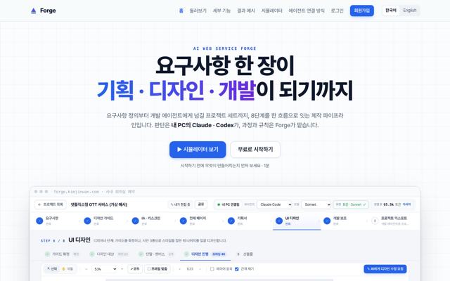
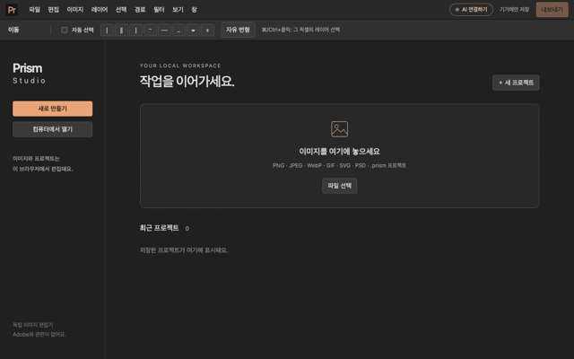
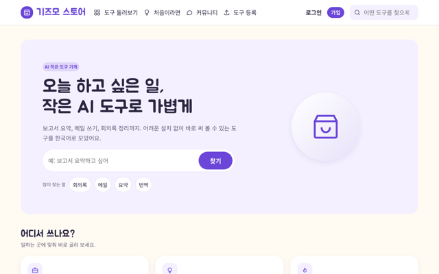

Forge
요구사항 정의에서 디자인·화면설계·개발 보조·익스포트까지 하나의 흐름으로 잇도록 제가 만든 웹서비스 제작 도구.A web-service production tool I built to connect requirements, design, screen specs, development assistance and export in one flow.
Claude CodeCodex
열기Open
기획, 개발, 출시, 운영까지 제가 직접 합니다. 반복되는 작업은 제가 설계한 AI 공장이 처리하고, 무엇을 만들고 어디까지 낼지는 제가 판단합니다. 그 결과가 아래의 앱, 웹게임, 웹 도구, 블로그입니다.I handle planning, building, release and operations myself. The repetitive work runs through AI factories I designed; the judgement calls on what to build and what to ship stay with me. The apps, web games, web tools and journal below are the result.


요구사항 정의에서 디자인·화면설계·개발 보조·익스포트까지 하나의 흐름으로 잇도록 제가 만든 웹서비스 제작 도구.A web-service production tool I built to connect requirements, design, screen specs, development assistance and export in one flow.

제가 만든 독립 웹 편집기. 브라우저에서 레이어·선택 영역·마스크로 이미지를 편집하고, PSD 열기·저장을 지원합니다.An independent browser image editor I built, with layers, selections and masks, including PSD open and save.

보고서 요약·메일 쓰기·회의록 정리 같은 일을 설치 없이 쓰는 작은 AI 도구를 모아, 제가 운영하는 한국어 도구 가게.A Korean-language shop I run, collecting small AI tools for everyday work such as summarizing reports, writing email and organizing meeting notes, usable without installing anything.
각 공장은 단계가 정의돼 있고, 품질 게이트를 통과해야 다음 단계로 갑니다. 제가 개입하는 곳은 정해져 있습니다: 방향을 정하고, 승인하고, 판정하는 지점입니다.Each factory has defined stages and quality gates. I step in at fixed points: setting direction, approving and judging.
기획부터 App Store 업로드·심사 제출까지, iOS 앱을 양산하도록 제가 설계한 파이프라인A pipeline I designed to ship iOS apps from planning to App Store upload and review submission
AIGATEHUMAN
제가 맡는 일What I do: 실기기 연결과 심사 제출 승인은 제가 합니다.I connect the real device and approve the submission.
기독교인 고객을 위한 앱을 만들려고, 같은 엔진에 신앙 전용 규정을 더해 제가 설계한 파이프라인A pipeline I designed for apps aimed at Christian users: the same engine plus faith-specific rules
AIGATEHUMAN
제가 맡는 일What I do: 앱 공장과 마찬가지로, 실기기 연결과 심사 제출 승인은 제가 합니다.As in the app factory, I connect the real device and approve the submission.
게임 선정부터 개발·검증을 거쳐 웹 포털에 편입하기까지, 제가 설계한 양산 파이프라인A pipeline I designed that takes games from selection through build and verification into the web portal
AIGATEHUMAN
제가 맡는 일What I do: 선정 풀과 방향을 정하고, 완성작을 직접 플레이해 판정합니다.I set the selection pool and direction, and judge finished games by playing them.
게임 소재 선정부터 이미지·음성·합성·검수·업로드까지, 쇼츠를 만들도록 제가 설계한 파이프라인A pipeline I designed to make short videos from topic selection through images, voice, compositing, review and upload
AIGATEHUMAN
제가 맡는 일What I do: 채널 방향과 운영 재개·중지는 제가 결정합니다. 공개 전 사람 승인은 두지 않고 자동 검사로 대신합니다.I decide channel direction and when to resume or pause operations. There is no pre-publish human approval; automated checks stand in for it.
AI가 조사·초안을 쓰고 자동 게이트를 거쳐 글을 발행하도록 제가 설계한 편집 파이프라인An editorial pipeline I designed where AI researches and drafts, and posts are published after automated gates
AIGATEHUMAN
제가 맡는 일What I do: 주제 방향을 정하고 공개 후에 검토합니다. 제 검토는 발행을 막지 않는 사후 기록입니다.I set topic direction and review after publication. My review is a non-blocking after-the-fact record.
이 도메인은 이력서 한 장에서 끝나지 않습니다. 아래는 제가 실제로 공개해 둔 콘텐츠로 이어집니다.This domain is more than a résumé. Every link below opens public content I actually published.
AI 자동화의 실패와 복구, 실제 앱 제작·심사, 플레이 중인 게임의 공식 공지를 출처와 날짜까지 구분해 제가 기록합니다. AI가 조사·초안을 쓰고, 독립 검토와 자동 공개 게이트를 통과한 글만 발행합니다.I write up AI automation failures and recovery, real app production and review, and sourced game updates. AI researches and drafts; only posts that pass an independent review and an automated release gate are published.
계산기부터 PDF·이미지 처리까지, 제가 만든 도구는 파일과 입력값을 가능한 한 사용자의 기기 안에서 처리합니다. 각 도구에 규칙과 한계를 함께 적었습니다.From calculators to local PDF/image utilities, the tools I build keep files and inputs on your device whenever possible, with rules and limits explained.
설치 없이 브라우저에서 바로 플레이하는 게임 포털. 제가 설계한 파이프라인으로 양산하고, 편입 검사를 통과한 게임만 올립니다.A browser game portal. Games are produced by a pipeline I designed and published only after passing admission checks.
제가 앱 공장으로 만들어 App Store에 업로드·심사 제출한 iOS 앱들. 출시와 심사 기록은 블로그에 남깁니다.iOS apps I built with the app factory and uploaded to the App Store for review. I keep release and review records in the journal.